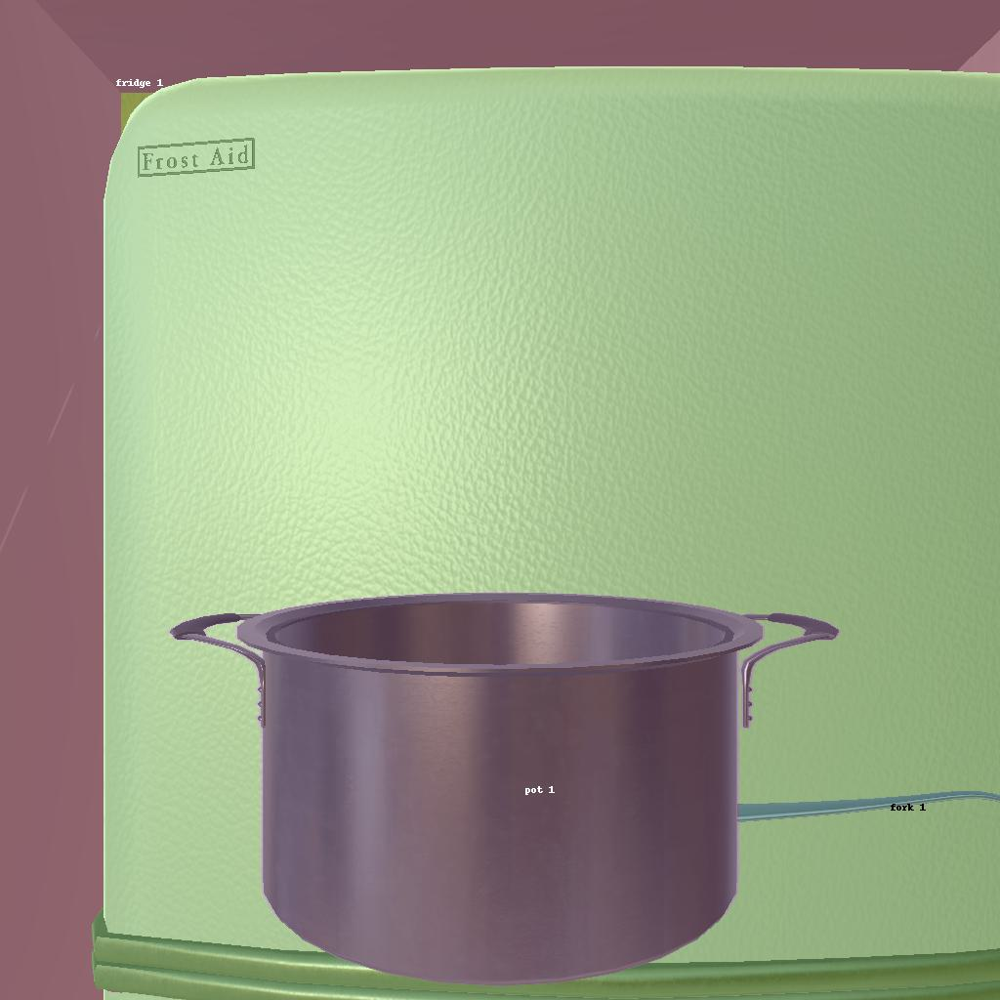
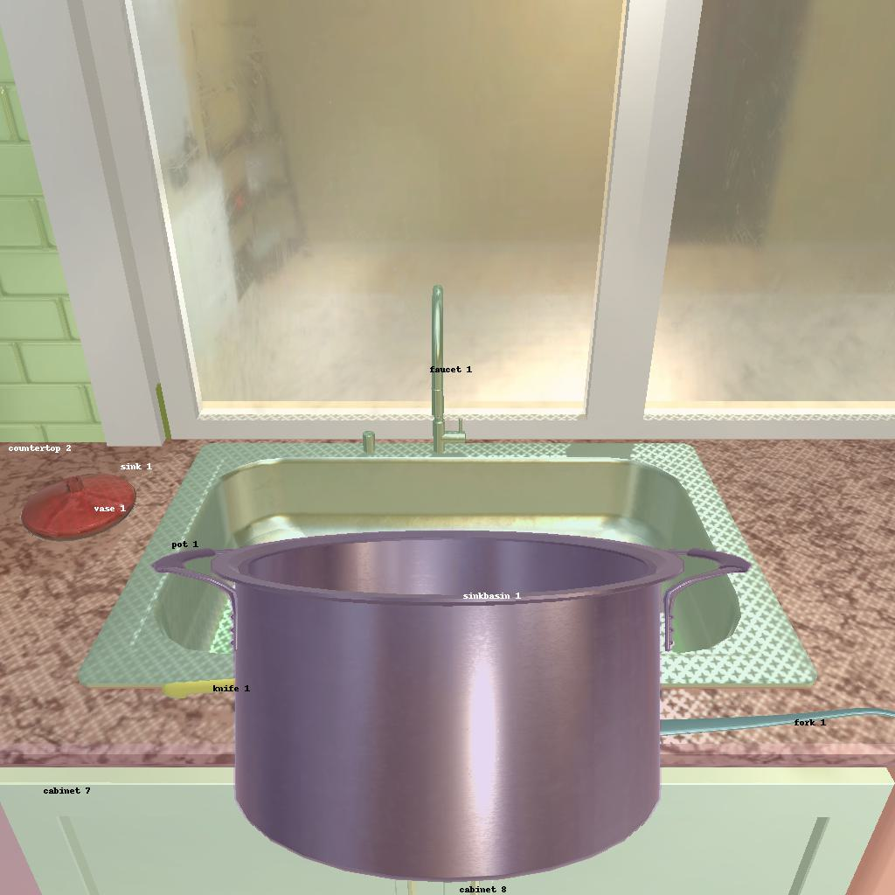

---------------------------------------------------------task: 16---------------------------------------------------------
--------------------------------------------------------------------------------------------------------------------------------------------------------------------
--------------------------------------------------------------------------------------------------------------------------------------------------------------------
Step:--------------------------------------------------------------------------9-------------------------------------------------------------------------------
----------------------------------------
VLM Prompt:
Image1:
Image2:
Image3:
**Instruction**
1. Analyze the provided image to identify all visible household objects, focusing on those relevant to the task description "cool some pan and put it in sinkbasin."
2. Use the analysis of the image and the task hint "The agent must find an object of the desired type, pick it up, go to a fridge, cool the object with the fridge, then find the correct location to place it, and put it down there. The agent does not need to use the fridge button or open the fridge to cool the object, and the agent just needs to do action that is "cool the object with the fridge"." to answer the question: what is the most reasonable action in the choices for the task description "cool some pan and put it in sinkbasin"?
4. Decide and write the answer using the template: The answer is: (i): , where i is the real number. If there is no desired object in the image, search every place based on **Initial Observation** to find the object. And if no one is exactly correct, choose a similar answer.
**Initial Observation**
You are in the middle of a room. Looking quickly around you, you can see cabinet (1-9), countertop (1-3), drawer (1-9), stoveburner (1-4), microwave (1), sink (1), fridge (1), toaster (1), coffeemachine (1), sinkbasin (1), shelf (1-3), garbagecan (1)
**Answer Choices**
(1): go to cabinet 1
(2): go to countertop 1
(3): go to cabinet 2
(4): go to countertop 2
(5): go to drawer 1
(6): go to drawer 2
(7): go to drawer 3
(8): go to drawer 4
(9): go to stoveburner 1
(10): go to drawer 5
(11): go to stoveburner 2
(12): go to stoveburner 3
(13): go to stoveburner 4
(14): go to cabinet 3
(15): go to cabinet 4
(16): go to microwave 1
(17): go to cabinet 5
(18): go to cabinet 6
(19): go to cabinet 7
(20): go to sink 1
(21): go to fridge 1
(22): go to toaster 1
(23): go to coffeemachine 1
(24): go to cabinet 8
(25): go to drawer 6
(26): go to drawer 7
(27): go to drawer 8
(28): go to shelf 1
(29): go to shelf 2
(30): go to countertop 3
(31): go to shelf 3
(32): go to drawer 9
(33): go to cabinet 9
(34): go to garbagecan 1
(35): clean pot 1 with sink 1
(36): clean pot 1 with sinkbasin 1
(37): examine pot 1
(38): examine sinkbasin 1
**Answer**
Let's think step by step by following the instructions.
----------------------------------------
----------------------------------------
Original Response:
Firstly, we need to identify all visible household objects relevant to the task description "cool some pan and put it in sinkbasin." From the images provided, we can see a pot (pot 1), a fridge (fridge 1), a sink (sink 1), and a sinkbasin (sinkbasin 1).
Based on the task hint, the agent must find an object of the desired type, which in this case is a pot or pan. The agent needs to pick it up, go to a fridge, cool the object with the fridge, then find the correct location to place it, which is the sinkbasin, and put it down there.
Considering the initial observation that tells us the objects present in the room and the relevant objects we identified in the images, the most reasonable action for the agent would be to:
- Pick up the pot (pot 1) since it's the desired object for the task.
- Go to the fridge (fridge 1) to cool the pot.
- Go to the sinkbasin (sinkbasin 1) to place the cooled pot.
None of the answer choices directly specify these actions, but the closest actions that would initiate this sequence are picking up the pot and examining the sink basin where it will be placed. Since the action of cooling the pot with the fridge does not require interaction with the fridge button or opening the fridge, the next relevant action is placing the pot in the sink basin.
The answer is: (38): examine sinkbasin 1, since examining the sinkbasin is part of the sequence of actions needed to complete the task.
----------------------------------------
----------------------------------------
>>> Refine Original VLM Response and Get Pure Action: examine sinkbasin 1, since examining the sinkbasin is part of the sequence of actions needed to complete the task
----------------------------------------
-----------------------------------------------------------------
Running time: 22.26352047920227 seconds
Total Money: 9.997110000000001
-----------------------------------------------------------------
-----------------------------------------------------------------
Text Observation:Nothing happens.
-----------------------------------------------------------------
UNSUCCEED